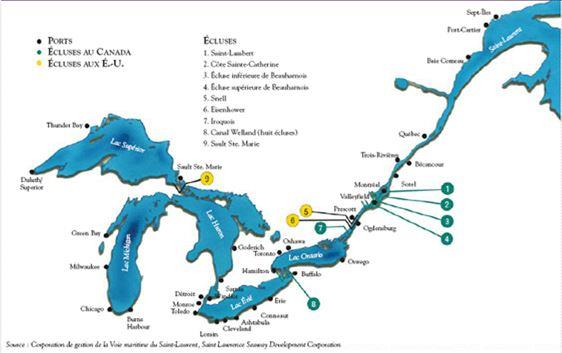
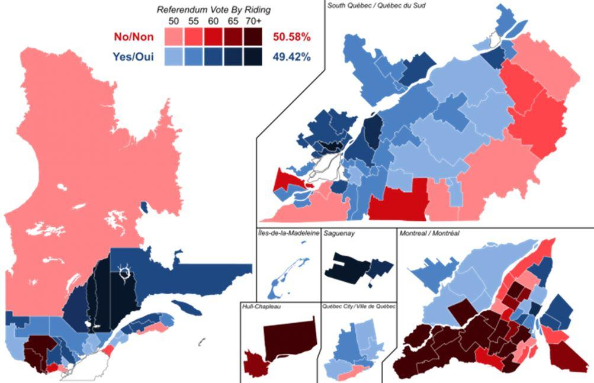
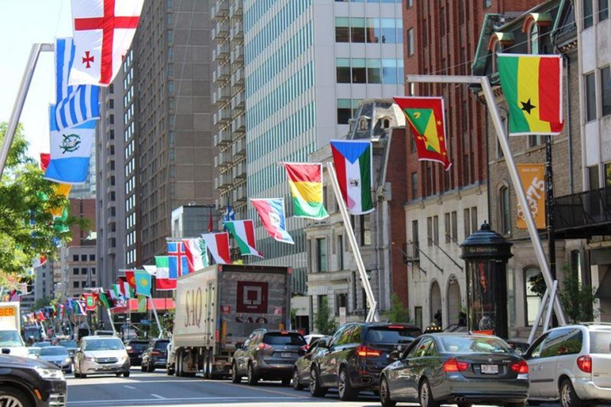
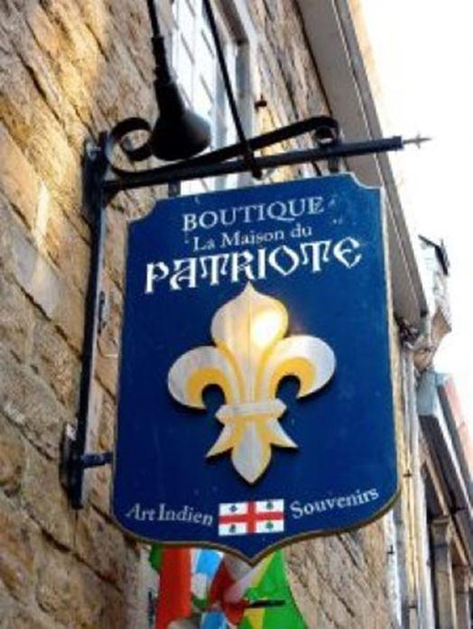

Comme la plupart des autres pays du monde, le Québec se débat entre une fécondité basse et une immigration mathématiquement nécessaire mais qui pose d’autres problèmes.
Je vais commencer par situer de débat à partir de souvenirs et analyses personnels d’un ami de toujours de la « Nouvelle France ».
LE QUÉBEC, JE SUIS TOMBÉ DEDANS QUAND J’ÉTAIS PETIT
Coureur de bois, Gravure sur bois de Arthur HemingCette phrase d’Obélix s’applique assez bien à mes rapports avec le Québec, que j’ai découvert très jeune par mes lectures.
J’avais un grand-père communiste qui bouffait du curé, et, pour lui, les très catholiques Québécois, nostalgiques de l’ancien régime royaliste, étaient particulièrement demeurés. C’était dans les années 1950.
Mais parallèlement je lisais les aventures des trappeurs de fourrure et coureurs des bois 1, plutôt libertaires et en bons termes avec les Indiens… et les Indiennes 2. Mais ça datait, disait-on, d’avant la conquête anglaise et la mort de Montcalm 3 sous les murs de Québec, qui me tirait des larmes.
À peine plus tard, démographe et militant francophone en herbe, je lisais les recensements canadiens, qui sont particulièrement travaillés pour ce qui concerne l’origine ethnique et les langues.
Ils montraient une anglicisation croissante des personnes d’origine française.
J’ai donc voulu aller voir sur place.
L’ancien régime et la révolution tranquille
Nous sommes maintenant en 1963, j’arrive à Québec où je tombe sur l’inscription « Je suis le chien qui ronge son os. Un jour viendra, qui n’est pas venu, où je mordrai qui m’a mordu ».
Puis j’arrive à Montréal pour réaliser mon contrat : analyser les causes de cette anglicisation 4.
Une fois sur place, j’y vois deux raisons évidentes :
la domination économique anglophone dans l’ensemble du pays et en particulier à Montréal,
et la négation des droits des francophones en dehors du Québec.
Slogan électoral du Parti libéral du Québec en novembre 1962. L’enjeu principal de la campagne est la nationalisation de l’électricité.
C’est ce que j’explique alors sur les ondes de Radio Canada, en pleine « Révolution tranquille 5» à laquelle j’ai ainsi ajouté ma très modeste contribution.
Révolution que l’on peut résumer sommairement en 2 mots : laïcisation, avec la fin de l’omniprésence de l’église catholique, et offensive économique, domaine laissé jusque-là aux anglophones.
Le gouvernement canadien lance d’ailleurs en juillet 1963 une grande enquête sur le bilinguisme et le biculturalisme, menée par la commission Laurendeau–Dunton 6, qui aboutit en 1967 aux mêmes conclusions, après avoir interrogé des milliers de personnes pendant des mois. Elle transforme ainsi ce qui paraissait une mauvaise humeur bizarre des francophones en vérité officielle.
Une petite précision pour mes lecteurs français habitués au jacobinisme : le Canada est un pays fédéral, comme la Suisse ou l’Allemagne. Le gouvernement central n’a d’autorité que sur certaines administrations, alors que la grande masse est entre les mains des municipalités ou des États fédérés (tous anglophones à l’époque, sauf le Québec bilingue). Dire que « le Canada est bilingue » ne concerne donc que quelques dizaines de milliers de personnes.
Petit à petit, je compris que la Révolution tranquille était la revanche des coureurs des bois sur le Québec « colonisé » à cheval sur le XIXe et XXe siècle.
Ce Québec a été décrit comme un catholicisme rural choqué par la révolution française et ayant donc gardé comme symbole la fleur de lys des rois de France. L’église catholique locale a donc transigé avec l’occupant britannique farouchement protestant : « à vous les villes, le commerce et l’économie, mais vous nous laissez régner en français sur les âmes paysannes. Nous apprendrons de latin aux meilleurs qui deviendront curés et notaires et n’iront pas vous concurrencer dans votre (méprisable) activité d’affaires ».
Cela avec une arrière-pensée très précise : dans ce pays où la terre agricole est abondante, « un bon paysan catholique a 10 voire 20 enfants et nous submergerons les Anglais ».
J’ai le souvenir d’une famille expliquant que, dans les années 1940, un enfant devenu curé exhortait ses 17 frères et sœurs à se multiplier.
Dans l’esprit des Québécois de 1963, cet « ancien régime » est symbolisée par Maurice Duplessis et son parti l’Union nationale, électoralement importants ou dominants de 1930 à 1959. Mais, comme toujours en histoire, l’ancien régime est à la fois conservateur, voire réactionnaire, mais prépare également l’avenir, en l’occurrence en cultivant le nationalisme québécois.
Le gâchis démographique de l’ancien régime
Certes la grande fécondité québécoise de l’époque a permis quelques gains territoriaux. Le plus connu est celui des cantons de l’Est, cette zone entre Montréal et les États-Unis qui redevient à majorité francophone dans la première moitié du XXe siècle. C’est aussi le cas des villes de Montréal et de Québec.
Mais globalement il s’agit d’un gâchis : nous sommes à l’époque de l’exode rural et de l’industrialisation en zone anglophone, notamment aux États-Unis.
Du fait du mépris de l’église pour l’économie, une partie de la population québécoise émigre donc à la fin du XIXe siècle et au début du 20e pour travailler dans l’industrie de la Nouvelle-Angleterre.
Une partie importante de cette région américaine, donc de langue officielle anglaise, devient alors de langue française soutenue par des écoles catholiques, dans un premier temps francophones, mais dans un deuxième temps contrôlées par les Irlandais anglophones qui y immigrent massivement.
Et ce qui devait arriver arriva : aujourd’hui, « les Francos » se sont anglicisés et si des quartiers entiers ont des boîtes aux lettres aux noms de famille français, seule une minorité est demeurée francophone.
Le phénomène a été amplifié par une erreur du gouvernement québécois qui a refusé d’accorder des frais universitaires réduits pour les Francos, qu’il s’agisse des anciens québécois et de leurs descendants ou des communautés françaises de l’époque coloniale englobées dans le territoire des États-Unis.
Le Québec a ainsi perdu d’éventuels retours d’immigrants ainsi que le maintien du français dans les régions proches du Canada.
Le gâchis démographique a existé aussi au nord : envoyer les jeunes paysans défricher des terres dans le nord de l’Ontario a certes renforcé les communautés francophones locales, mais elles s’anglicisent avec l’exode rural.
Le cas de Sudbury, centre urbain de cette région, est emblématique : cette ville de l’Ontario à majorité anglophone et à minorité francophone très discrète, draine la population des « petits Québec » de la région vers des emplois en anglais. Sauf, théoriquement, dans la fonction publique bilingue et dans l’université que j’ai eu le plaisir de fréquenter.
Enfin, au Québec même, l’exode rural envoyait les ruraux dans des zones de pouvoir économique anglophone, ce qui était également mauvais à long terme.
De toute façon, on n’arrête pas le cours de l’histoire. La laïcisation des esprits était en cours, la chute de la fécondité également. Commencée comme dans beaucoup de pays au début du XXe siècle, elle s’accélère avant la révolution tranquille, probablement du fait de l’exode rural et de la laïcisation.
Cette fécondité est maintenant relativement stable entre 1,6 et 1,7 enfants par femme, et nettement moins à Montréal. Hors immigration, cela implique donc un vieillissement puis une disparition progressive de ces populations.
Les résultats positifs de « la révolution tranquille »
Cette « révolution » a eu 2 effets :
À l’échelle du Canada, elle a servi d’aiguillon à la commission Laurendeau-Dunton, et il en est résulté une augmentation des droits, notamment scolaires, des francophones dans tout le Canada. Mais ce n’est pas notre sujet ici et il est probable que ça n’a fait que retarder leur assimilation.
Au Québec, elle a permis l’affirmation du français comme langue principale. Je dis « principale » étant attentif à ne pas utiliser de terme juridique, car il faudrait voir leur définition exacte et surtout leur application. Toujours est-il que les grandes entreprises sont passées au français comme langue de travail dans leurs bureaux québécois, mais que l’application est variable dans les PME déjà existantes.
À cela s’est ajoutée la création emblématique de l’Hydro-Québec avec la nationalisation des entreprises d’électricité existantes et leur fusion dans un grand organisme francophone.
Le résultat a été une émigration d’une partie des anglophones du Québec qui ne supportaient pas cette nouvelle situation. D’un côté, cela a renforcé le rôle du français dans ce pays, mais de l’autre, cela a lancé la ville de Toronto, devenue la métropole du Canada au détriment de Montréal.
Il faut dire que la création de « la voie maritime du Saint-Laurent 7», du Canada et des États-Unis, qui mène les gros navires jusqu’à Chicago, a largement par ailleurs tué le rôle portuaire de Montréal qui était auparavant l’aboutissement de nombreuses lignes maritimes.
Pour mes amis non géographes, je précise que le Saint-Laurent accueillait des bateaux de mer jusqu’à Montréal, en amont duquel commencent les rapides. Spectacle impressionnant que je vous invite vivement à contempler … Attention, je ne vous parle pas des chutes du Niagara qui sont plus en amont !
Enfin l’urbanisation, la nationalisation de l’enseignement jusque-là catholique et sa diversification en dehors des disciplines classiques ont favorisé la création de multiples entreprises québécoises et permis à de nombreux francophones d’avoir des positions de cadre.
Il y a eu toutefois une conséquence négative, du moins à mon avis (je sais que c’est controversé). Les gouvernements québécois légèrement socialistes de cette époque ont mis en place une bureaucratie, certes francophone, mais qui a pesé sur l’activité économique de la province.
Le point fort de l’aboutissement de la révolution tranquille a été la visite du général De Gaulle en 1967 et son fameux « vive le Québec libre 8 » qui a soulevé l’enthousiasme 9.
Identité, francophonie et immigration
Une fois de plus, on ne peut pas arrêter le cours de l’histoire, et d’autant moins que le Québec n’est pas indépendant.
Voici donc une opinion tout à fait personnelle sur la situation d’aujourd’hui.
Une partie des problèmes linguistiques ont été réglés par la Révolution tranquille et le mépris de certaines anglophones pour les francophones a largement disparu. La pression pour défendre le français a donc semblé moins nécessaire et est devenue moins forte. Les 2 référendums sur l’indépendance du Québec (en 1980 et 1995) ont donc été perdus, le second de très peu (rejeté par 50,58 % des votants10).
Aujourd’hui, mon impression est que les nationalistes québécois sont divisés en 2 courants : les identitaires et les « démographes pragmatiques »
Ces derniers sont très conscients que la population québécoise francophone de naissance diminue faute d’enfants. Elle sera donc noyée sous l’immigration massive favorisée par le pouvoir fédéral, notamment parce que ce dernier est conscient de la contraction démographique générale, qui touche aussi les anglophones. Mais cette immigration massive n’est pas un problème de survie pour la langue anglaise vers laquelle sont dirigés les immigrants en dehors du Québec.
Favoriser l’immigration francophone ?
La seule issue pour les Québécois est donc de favoriser l’immigration francophone : française bien sûr, mais aussi haïtienne, subsaharienne, maghrébine…
Cette politique a connu un certain succès démographique : à Montréal, les « allophones » 11 , ni anglophones ni francophones de naissance, de langue française sont maintenant nombreux, ce qui compense la baisse relative des francophones de naissance.
Le problème est que ces immigrés sont différents des Québécois « pure laine » (en France on dirait « de souche ») ultra majoritaires en dehors de Montréal. Je vais être franc et direct : une partie de ces immigrants francophones sont noirs, une autre est musulmane et certains subsahariens sont les deux. D’où des problèmes analogues à ceux que l’on constate en France, mais à mon avis beaucoup moins graves.
Comme ailleurs, le vocabulaire est important. En l’occurrence la cible des identitaires est le « multiculturalisme » seul mot employable dans une ambiance générale antiraciste.
Ce « multiculturalisme » est effectivement la politique fédérale, d’une part pour les raisons démographiques que nous avons vues, mais d’autre part parce que, vu d’Ottawa, le français est une langue parmi d’autres. Au mieux comme celle des autres indigènes indiens ou esquimaux (mot français pour les Inuits), au pire comme une des nombreuses langues parlées par les immigrants mais non officielles, comme l’ukrainien.
Bref les Québécois, pour « le fédéral », sont destinés à s’angliciser, même si on ne peut pas le dire ouvertement.
Mon avis sur l’indépendance du Québec
Je ne suis pas le général De Gaulle, qui d’ailleurs était prudent en mettant l’accent sur l’idée (vive le Québec LIBRE) et non sur le juridique (l’indépendance). Je n’ai pas à donner conseils aux Québécois. Mon sentiment, dont ils feront ce qu’ils voudront, est que l’indépendance serait un pas en avant et surtout une clarification.
L’INDÉPENDANCE NE SERAIT NI UN DRAME, NI UN MIRACLE
 Enseigne avec symbole souverainiste
Pas un drame, contrairement à ce qu’affirment les fédéralistes, car beaucoup de pays d’une taille voisine ou inférieure au Québec ont un développement tout à fait normal, à commencer par le champion du monde, la Suisse.
On pourrait aussi penser à la Norvège, qui certes a du pétrole, mais le Québec a mieux : ses immenses ressources hydroélectriques : c’est son électricité qui alimente New York !
Et l’indépendance n’empêche pas d’être presque transparent vis-à-vis de ses voisins : la Norvège fait partie de l’EEE (Espace Économique Européen) et a comme principal partenaire l’Union Européenne, à laquelle la Suisse est également très liée par une série d’accords, la quasi-totalité de son commerce extérieur et un flux journalier de nombreux travailleurs frontaliers.
Pas un miracle non plus, car la pression de l’anglais existe aussi dans des pays indépendants : non seulement en France mais aussi en Belgique, en Hollande, en Allemagne, en Suisse et ailleurs.
INDÉPENDANCE OU PAS, LA NÉCESSAIRE IMMIGRATION
Indépendance ou pas, la survie du Québec exige d’abord une immigration pour des raisons purement mathématiques, mais aussi l’intégration puis l’assimilation de cette immigration, culturellement éloignée du reste de la population. Cela me paraît tout à fait possible, la société québécoise étant beaucoup plus favorable que celle des pays de départ.
Encore faut-il à la fois veiller au strict respect des lois du pays et à un accueil sympathique évitant le rejet et la ghettoïsation. Certains patrons de PME francophones n’aident pas en rejetant des candidatures africaines sous le prétexte totalement injustifié et contre-productif : « vous ne parlez pas anglais » !
Les principaux vecteurs d’intégration, puis d’assimilation des générations suivantes, dans tous les pays, sont l’école, le travail et l’associatif, comme celui des églises en Allemagne qui sont un laboratoire d’intégration qui devrait être mieux étudié, alors que les conditions sont beaucoup plus difficiles qu’au Québec : les réfugiés syriens en Allemagne ignorent non seulement l’allemand, mais aussi l’alphabet latin !
Aux Québécois de voir si chacune de ces questions serait plus facile ou non à traiter dans un pays indépendant.
Y. M.
NOTES ET RÉFÉRENCES
1. https://fr.wikipedia.org/wiki/Coureur_des_bois
2. Le célèbre film américain « La Captive aux yeux clairs » (The Big Sky) de Howard Hawks, réalisé en 1952, met en scène une expédition de trappeurs coureurs de bois vers le Haut Missouri chez les Indiens Pieds-Noirs, où ils rivaliseront pour les beaux yeux d’une princesse indienne.
3. Louis-Joseph de Montcalm est un lieutenant-général français des armées en Nouvelle-France. Il sera le dernier à exercer cette fonction à la suite de la conquête de 1759-1760 de la Nouvelle-France par le Royaume Uni.
Partager cette page